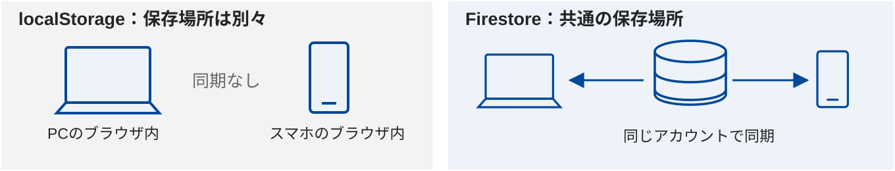
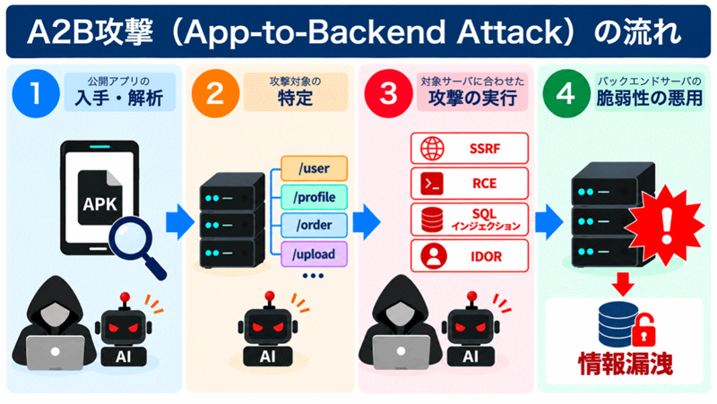
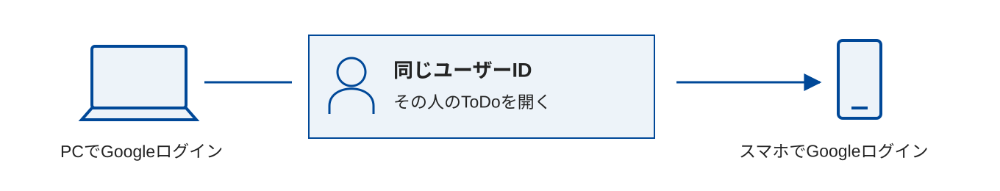
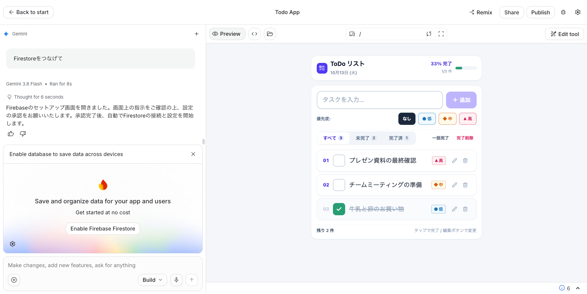
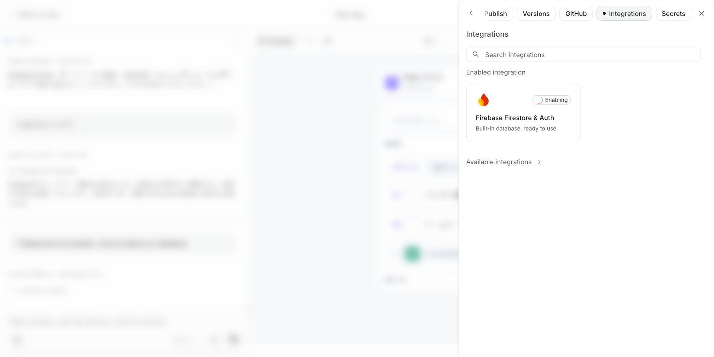
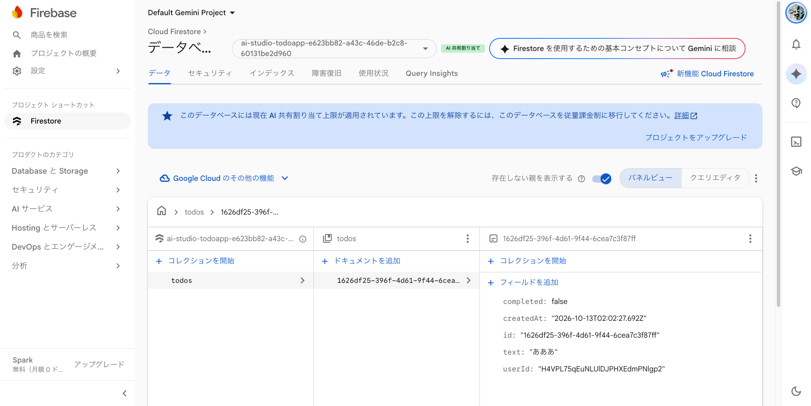
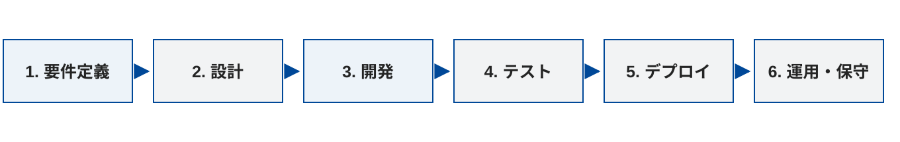
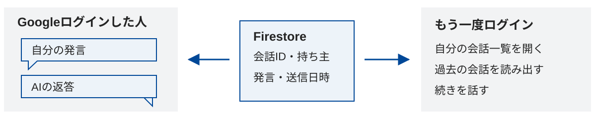

第4回｜2026年10月16日｜プログラミング演習
AIとつくるWebアプリ①
今日のゴール
ToDoアプリをつくり、スマホとパソコンで同期する。
チャットアプリを新規でつくり、ログインと会話履歴を追加する。
画面・データベース・認証の役割を理解する。
前回：AIを使う・公開する責任を考えた。
今回は、ログインとデータのアクセス制御を実装して確かめる。
全7回の中で、今日は第4回
全7回の授業スケジュール
| 回数・日程 | テーマ | 担当講師 |
|---|---|---|
| 1（9/25） | AI基礎 | 伊藤、髙田 |
| 2（10/2） | プロンプトエンジニアリング | 髙田 |
| 3（10/9） | AIの活用と倫理 | 伊藤 |
| 4（10/16） 今回 | AIを活用したアプリ生成 ① | 伊藤 |
| 5（10/23） | AIを活用したアプリ生成 ② | 髙田 |
| 6（11/6） | 総合演習 | 髙田、伊藤 |
| 7（11/13） | 総合演習 | 伊藤、髙田 |
今日：保存・同期・ログインをつなぐ → 次回：AIを活用したアプリ生成②
前半100分＋後半100分｜今日の道順・いまここ
今日の道順：小さくつくる
前半｜100分
左を上から下へ → 休憩 → 右を上から下へ
次にすること：ポートフォリオ・タイマー・ToDoをつくり、保存先を確かめる。
導入5分の中で｜まず入力して、生成を待とう
まずは、見せるページと動くアプリ
01 ポートフォリオ
自分の作品を紹介するポートフォリオサイトを作ってください。
自己紹介・作品3点・作品の説明を入れ、写真は仮画像で構いません。02 タイマー
分数を指定できるタイマーを作ってください。
開始・一時停止・リセットをつけ、残り時間を大きく表示してください。今は、入力・送信だけ
01・02をそれぞれ別の新しいアプリとして、AIに入力・送信する。
生成を待つ間にアイスブレイクへ。動作確認・改良・Slack投稿は後で行う。
導入・アイスブレイク5分課題｜Slack投稿｜3分
アイスブレイク：お菓子と、便利なアプリ
まず、ひとこと
好きなお菓子は？
最近、便利だと思ったアプリは？
Slackに投稿する内容
好きなお菓子：〇〇
便利だと思ったアプリ：〇〇。便利なところ：〇〇導入5分の中で｜元の教材の、開発に向き合う3つの言葉
まずつくり、試して、直そう
Fail fast
早く試し、うまくいかない点を早く見つける。
Done is better than perfect
完璧を目指しすぎず、まず動くものを完成させる。
Deploy or Die
人に使ってもらい、反応をもとに改良する。
ウォームアップ10分｜先ほど生成した01・02を確認し、完成ごとに投稿課題｜Slack投稿｜10分
まずは、見せるページと動くアプリ
01 ポートフォリオ
自分の作品を紹介するポートフォリオサイトを作ってください。
自己紹介・作品3点・作品の説明を入れ、写真は仮画像で構いません。02 タイマー
分数を指定できるタイマーを作ってください。
開始・一時停止・リセットをつけ、残り時間を大きく表示してください。Slackに、それぞれ1投稿
先ほど生成したアプリを開く。まだ入力していないものだけ、上の指示で生成する。
01ができたら：ポートフォリオの画面＋見た目を変えた点。
02ができたら：タイマーの画面＋開始・一時停止を試した結果。
クイズ・AIに確認5分｜まず予想してSlackに投稿課題｜Slack投稿｜クイズ5分内
クイズ：01と02、それぞれどっち？
A：フロントエンドだけ
ブラウザ内で動く。静的配信でもJavaScriptで画面を動かせる。
B：バックエンドも使う
サーバー側でデータを保存・取得する。ここでは、この処理を「動的」と呼ぶ。
Slackに投稿する回答
01 ポートフォリオ：A／B。理由：〇〇
02 タイマー：A／B。理由：〇〇答え・考え方
01も02もフロントエンドだけで作れる。タイマーはブラウザ内のJavaScriptで動く。
画面の動きとバックエンドの使用は別。実際に生成されたコードで確認しよう。
クイズ5分の中で確認｜01・02それぞれのAIチャットで聞く課題｜Slack投稿｜クイズ5分内
AIに聞こう：バックエンド・DBを使っている？
そのまま聞いてみよう
このアプリはバックエンドやDBを使っていますか？
使っているサービスと保存先、画面が動く仕組みをコードをもとに説明してください。Slackに、確認結果を投稿
01：バックエンドあり／なし、DBあり／なし。根拠：〇〇。
02：バックエンドあり／なし、DBあり／なし。根拠：〇〇。
自分の予想と同じだった？ 違っていたら、分かったことを1文添える。
前半・最初の50分｜ToDo作成・改良10分課題｜Slack投稿｜10分
まず、ToDoアプリをつくろう
そのまま入力できる指示例
日本語のToDoアプリを作成してください。
追加・編集・削除・完了切り替えができ、スマホでも操作しやすくしてください。試して、1つ改良する
追加・編集・削除・完了を試し、色・表示・機能のどれか1つをAIとの対話で改良する。
Slackに2投稿：①作成した画面 ②改良した画面＋何を変えたか1文。
保存・同期の課題5分｜同じブラウザで残ることを確かめる課題｜Slack投稿｜5分
localStorageの中を見てみよう
localStorage：ブラウザ内の保存先
サイトごとにデータを保存する仕組み。再読み込み後も残るが、別端末へは自動で同期しない。
保存先がlocalStorageなら、開発者ツールのApplication → Local Storageでキーと値を見る。
AIに聞いてみよう
このToDoの保存先はどこですか？ localStorageならキー名も教えてください。
保存・読み出しのコードを示して説明してください。Slackに投稿する内容
ToDoの画面＋保存先（localStorageならキー名）＋再読み込み後も残ったか。
保存・同期の課題5分｜別の端末へ渡せる？
このままだと、端末間で同期できない
パソコンには残っている
localStorageは、そのブラウザ内の保存場所。
再読み込みしても残るが、別の端末へ自動では渡らない。
スマホではどうなる？
同じアプリを開いても、スマホの保存場所は別。
画面を共有することと、データを同期することは違う。
- パソコンのToDo
- 共通の保存場所？
- スマホのToDo
Firebaseは全体の名前。FirestoreとAuthenticationは、その中のサービス。
Firebaseの中に、保存と認証のサービスがある
保存する場所が変わると、できることが変わる
localStorageとFirestore、何が違う？

保存方法を比べる
| 比較すること | localStorage | Cloud Firestore |
|---|---|---|
| 保存先 | その端末・そのブラウザ内（サイトごと） | クラウドのデータベース |
| 別の端末 | 自動では同期しない | 同じアプリ・アカウントで同期できる |
| ユーザーの識別 | ログイン機能は別途必要 | Authenticationと組み合わせる |
画面の裏で、データを保存・読み書きする
DBとバックエンドが必要
フロントエンド
ブラウザで操作する画面。
入力欄・タスク一覧・完了ボタンなどを担当する。
バックエンド＋データベース
バックエンドは保存・取得やアクセスの制御を担当。
DB（データベース）はタスクを整理して保存する。
- パソコンの画面
- バックエンド＋DB
- スマホの画面
DB・認証15分の中で紹介｜保存するデータの形が違う
DBにも、いくつか種類がある
リレーショナルDB（RDB）
データを表（行と列）で管理する。
例：MySQL、PostgreSQL。SQLという言語で読み書きする。
ドキュメント型DB
データを項目と値のまとまりで管理する。
例：Cloud Firestore、MongoDB。NoSQLと呼ばれるDBの一種。
SQLの例：未完了のToDoを取り出す
SELECT text
FROM todos
WHERE completed = false;今回はFirestoreを使う。SQLは紹介のみ。実習ではFirestoreの仕組みでデータを読み書きする。
元の教材の構成図｜フロントエンド・バックエンド・DB
Webアプリの構造を、図で見よう

保存・DB・認証の仕組みを知る20分の中で紹介
APIは、画面とバックエンドをつなぐ窓口
- ブラウザの画面
- APIへのリクエスト
- バックエンド・DB
APIとは？
ソフトウェア同士が、決まった形で情報をやり取りするための窓口。
タスクや会話の保存・読み出し、AIへの質問などで使う。
誰の、どんな操作を受け付ける？
送られたリクエストの認証・権限・入力内容を、受け取る側で確認する。
Firebaseでも、認証とアクセス制御の設定が必要。
NICTの注意喚起｜2026年10月13日公表
最近の事例：アプリからAPIを調べ、サーバーを狙う

A2B攻撃（App-to-Backend）
公開Androidアプリを解析し、APIの接続先や仕様を調べ、バックエンドの弱点を狙う手法。
NICTは、WebサービスのAPIでも同様の問題が起こりうるとしています。
授業とのつながり：画面で隠すだけでなく、保存先でも本人の権限を確認する。
同じDBを使うなら、個人を識別したい
でも、誰のToDo？
DBだけでは足りない
全員のタスクが同じ一覧に出てきたら困る。
同じ人がスマホとパソコンを使っていることも判断したい。
データと持ち主を結びつける
タスクに持ち主のID（userId）を記録する。
ログインを通じて、その人のIDを確認する。

本人の識別と、データを守るルール
認証と、アクセスを許す仕組み
認証：あなたは誰？
Googleアカウントなどでログインし、ユーザーを識別する。
認可：何にアクセスできる？
本人のタスクだけを読んだり、変更したりできるようにする。
画面で隠すだけでは足りない。保存先でもアクセスを制限する。
FirestoreではSecurity Rulesを使う。他のサービスでも、権限設定やポリシーなどで誰が読み書きできるかを決める。
ここまで50分｜次は、ToDoにFirebaseを追加する
前半の折り返し
ここまでの流れ
ToDoをつくる → 端末内保存では同期できない → 共通のDBが必要。
個人の識別には認証、データを守るにはアクセス制御が必要。
前半100分＋後半100分｜今日の道順・いまここ
今日の道順：Firebaseをつなぐ
前半｜100分
左を上から下へ → 休憩 → 右を上から下へ
次にすること：ToDoにFirebaseをつなぎ、保存・同期・本人だけのアクセスを確かめる。
前半・次の50分｜Firebase連携25分課題｜つなぐ｜25分
ToDoにFirestoreとAuthenticationを追加
- AIに連携を依頼
- Firebaseを有効化
- ログインして保存
そのまま入力できる指示例
FirestoreとAuthenticationで、ログインとタスクの保存・同期を追加してください。
本人のタスクだけを読み書きできるようにしてください。AIの返答を確認
有効化を求められたら、画面の手順に沿って進める。
AIの案内から、連携の設定へ
Firebaseを有効にする

画面で行うこと
「Enable Firebase Firestore」を選ぶ。
案内に沿ってプロジェクトのロケーションを選択し、利用規約を確認して同意する。
AIが接続コードとSecurity Rulesを生成する。
Firebase Firestore & Auth
Integrationsで連携状態を確認

設定が終わったか確かめる
キャプチャの「Enabling」は処理中を表す。
連携完了とAIの返答を確認し、アプリを試す。
有効化だけで満足せず、ログインと保存が動くか確認する。
同じアプリURLで、同じアカウント・別アカウント・未ログインを試す
ログインして、保存・同期・権限を確かめる
PCとスマホ：同じアカウント
PCでGoogleログインし、タスクを入力する。
スマホで同じアプリURL・同じGoogleアカウントを使い、PCのタスクが見えるか確認。
スマホで完了にし、PCにも反映されるか確認する。
再読み込みしてもタスクが残るか確かめる。
別アカウント・未ログイン
別アカウントでは、先ほどのタスクが見えないか確認する。
ログアウトし、タスクが見えず、読み書きできないか確認する。
スマホがなければ、別ブラウザで試してもOK。
Security Rulesでも、他人のデータへのアクセスが拒否されるか確認する。
画面のタスクが、DBに保存されているか確認課題｜Slack投稿｜確認20分内
Firestoreの中を見てみよう

Firestoreを開く
https://console.firebase.google.com/
対象のプロジェクトとDBを選び、追加したタスクを探す。
text：内容。completed：完了。userId：持ち主。createdAt：日時。
Slackに投稿：DBで見つけたタスクの画面＋項目の意味を1文。
エラー文・操作・期待する結果をセットで伝える
動かないときは、現象を伝えて直す
同期できないときの指示例
同じアプリ・同じアカウントなのに、PCで追加したタスクがスマホに出ません。
保存先・ログイン状態・データの取得方法を確認して修正してください。権限エラーが出たら
エラー文と、その直前の操作をAIに伝える。
認証状態・保存先・持ち主のIDとルールの対応を確認する。全員にアクセスを許可して解決しない。
前半100分の最後：振り返り5分 → 休憩（別枠） → 後半へ課題｜Slack投稿｜5分
振り返り・休憩
自分の言葉で説明する
端末内の保存とFirestoreの保存は、何が違う？
AuthenticationとSecurity Rulesは、それぞれ何を担当する？
Slackに投稿する内容
保存先をlocalStorageからFirestoreに変えた違い：1文
AuthenticationとSecurity Rulesの役割の違い：1文前半100分＋後半100分｜今日の道順・いまここ
今日の道順：チャットを育てる
左を上から下へ → 休憩 → 右を上から下へ
次にすること：新しいチャットをつくり、Googleログインと会話履歴を追加する。
後半の最初｜先に入力して、生成を待とう
新しいチャットアプリをつくろう
新しいアプリから始める
Google AI Studioで、新しいチャットアプリを作成する。
好きなテーマを決めよう。例：制作の相談、旅行、趣味。
新規作成の指示例
〇〇をテーマに、日本語で会話できるAIチャットアプリをつくってください。
スマホでも使いやすく、自分の発言とAIの返答を区別して表示してください。今は入力・送信だけ。生成を待つ間にアイスブレイクへ。画面確認・Slack投稿は後で行う。
後半の最初｜新規作成・アイスブレイク5分のうち2分課題｜Slack投稿｜2分
午後のアイスブレイク：大学周辺のごはん屋さん
おすすめを、ひとこと
大学周辺のおすすめのごはん屋さんは？
Slackに投稿する内容
おすすめのお店：〇〇新規作成・アイスブレイク5分の中で｜つくって、試して、直す
アプリ開発の流れ

前半の学びを応用する
ToDoアプリで試したFirestoreとAuthenticationを、チャットアプリにも使う。
画面だけでなく、ログインと会話履歴の保存・読み出しを追加する。
AIとの対話を繰り返す
アイデア → 生成 → 動作確認 → 不具合の説明 → 修正。
コードや仕組みが分からなければ、AIに説明を求める。
新規作成・アイスブレイク5分の中で｜先ほど生成したチャットを確認課題｜Slack投稿｜新規作成5分内
新しいチャットアプリをつくろう
生成したアプリを開く
先ほど生成したチャットアプリを開き、会話できるか試す。
まだ入力していない場合だけ、テーマを決めて下の指示で生成する。
新規作成の指示例
〇〇をテーマに、日本語で会話できるAIチャットアプリをつくってください。
スマホでも使いやすく、自分の発言とAIの返答を区別して表示してください。Slackに投稿：新しくつくったチャットの画面＋テーマを1文。
後半・最初の50分｜ログイン追加20分課題｜Slack投稿｜ログイン20分内
チャットにGoogleログインを追加しよう
作成したチャットに、そのまま依頼する
Firebase AuthenticationのGoogleログインを追加してください。
ログインした人だけが会話と履歴を使え、ログアウト後は非表示になるようにしてください。Slackに画面のキャプチャを投稿
ログイン → 会話 → ログアウトを試す。
ログイン前、またはログイン後の画面キャプチャをSlackに投稿する。
元の教材の反復の図｜チャットのログイン・履歴追加でも使う
AIと行き来しながら、改良する

つくって、試して、理解する
うまく動かなければ、操作とエラーを伝えて修正する。
保存先やログインの仕組みが分からなければ、AIに説明を求める。
後半・最初の50分｜履歴の追加25分課題｜Slack投稿｜履歴25分内
チャットの会話履歴を保存しよう
ログインを追加したアプリに依頼する
会話履歴（自分の発言とAIの返答）をFirestoreに保存してください。
本人の履歴だけを読み書きでき、続きを話せるようにしてください。Slackに投稿する内容
履歴一覧と、過去の会話を開いた画面。
Firestoreにどんな項目を保存したか、AIに確認して1文添える。
履歴追加25分の中で確認｜表示とDBを結びつける課題｜Slack投稿｜履歴25分内
会話履歴は、どこに保存された？

AIに保存先を聞き、DBで見てみよう
会話が保存されるコレクション・ドキュメントと、持ち主のIDをAIに確認する。
Firebaseコンソールで、自分の発言とAIの返答が保存されているか確認する。
Slackに投稿：保存先と、本人の履歴を取り出す方法を1文ずつ。
ログイン20分・履歴25分の中で｜追加と同時に動かして確認課題｜Slack投稿｜追加作業の時間内
ログインと履歴の基本動作を確かめる
履歴が残る？ 続きから話せる？
会話した後に再読み込みし、履歴を開く。
ログアウト → 同じアカウントで再ログインし、履歴を確認する。
別端末・別ブラウザでも同じアカウントで開き、続きを話す。
Slackに投稿：確認した操作と結果を各1行。
他の人の履歴は見えない？
別アカウントと未ログインでは、本人の履歴が見えないことを確認する。
Security RulesもAIに説明させ、他人の履歴へのアクセスが拒否されるか確認する。
Slackに投稿：確認できた結果と、未確認の点。
ここまで50分｜次は、チャットを使いやすくして共有する
後半の折り返し
ここまでの成果
新しいチャットアプリに、ログインと会話履歴を追加した。
残り50分は、使いやすさの改良と、成果の共有に使う。
前半100分＋後半100分｜今日の道順・いまここ
今日の道順：改良して共有する
左を上から下へ → 休憩 → 右を上から下へ
次にすること：チャットを改良し、動作確認の結果と成果を共有する。
後半・次の50分｜改良30分課題｜Slack投稿｜改良30分内
チャットを、もっと使いやすくしよう
会話する画面を改良
文字の大きさ、送信ボタン、スマホでの操作性を見直す。
テーマに合う見た目や、AIの返答の仕方を工夫する。
Slackに投稿：改良した画面＋何を変えたか1文。
履歴の使いやすさを改良
会話のタイトルや並び順、過去の会話の開きやすさを見直す。
1つずつ改良し、保存・ログインが引き続き動くか確認する。
Slackに投稿：改良後の画面＋使いやすくなった点。
後半・次の50分｜トップページ作成・共有15分課題｜作成・Slack投稿｜15分
ログイン前のトップページで、機能を紹介しよう
作成したアプリのAI Studioで依頼する
このアプリに、ログイン前に表示するトップページを追加してください。
アプリ名・誰の何を助けるか・主な機能3つ・使い方を紹介してください。
Googleログインのボタンを置き、ログイン後はチャットと履歴を使えるようにしてください。
実装済みの機能だけを書き、既存のログイン・履歴の動作を保ってください。紹介文を、自分の言葉で見直す
誰の、どんな場面で役立つ？
実際に使える機能が伝わる説明にする。
Slackに投稿して紹介
トップページの画面＋紹介文を1文。
ログイン → 会話 → 履歴の動作も確認する。
後半・次の50分｜まとめ5分
画面から、使い続けられるアプリへ
今日の学び
フロントエンド：操作する画面。
Cloud Firestore：データを保存・同期する。
Firebase Authentication：ログインで本人を識別する。
Security Rules：誰が読み書きできるかを制御する。
公式ガイドと関連資料｜実習後の確認に
参考資料
Security RulesはFirebaseの仕組みです。他サービスでも、誰がどのデータを読み書きできるかを制御します。Supabaseでは行レベルセキュリティ（RLS）とポリシーを使います。